코드가 아니라 프로세스가 병목이에요
SDLC(Software Development Life Cycle)는 소프트웨어가 아이디어에서 운영까지 가는 과정이에요. 보통 기획, 설계, 구현, 테스트, 배포, 유지보수 여섯 단계를 거치고, 끝나면 다음 기능이나 버그를 들고 다시 처음으로 돌아가요. 발표자는 Anthropic이 낸 'The AI-Native SDLC playbook'을 펼쳐 놓고, Anthropic 팀이 이 여섯 단계를 에이전트와 어떻게 도는지 빠르게 훑어요.
출발점은 막대그래프 두 줄이에요. 위쪽 'Before agents' 줄은 모든 단계가 사람 속도로 돌고, 가운데 주황색 Build 막대가 가장 길어요. 아래 'After agents' 줄에서는 그 Build 막대가 아주 짧아지고 오른쪽에 빈 공간이 생겨요. 에이전트가 되찾아 준 시간이에요.
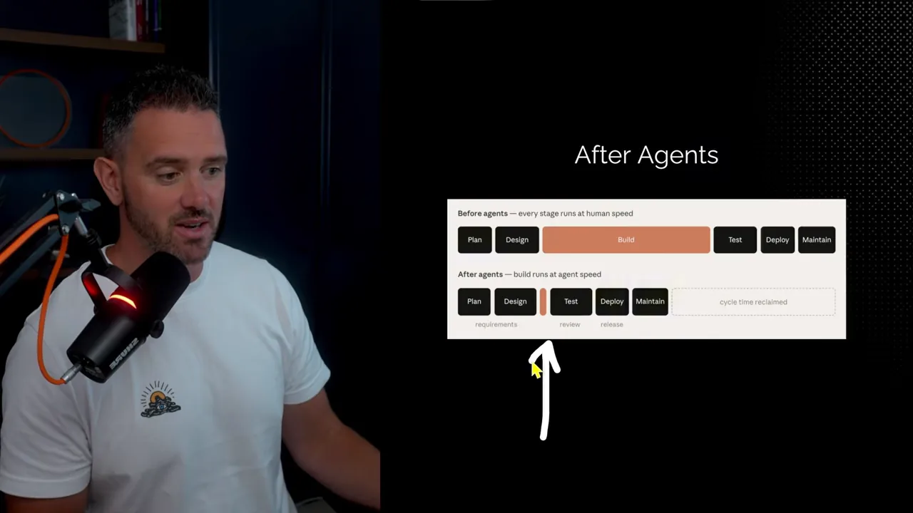
그래서 병목이 옮겨 갔어요. 'The Bottleneck Moved' 슬라이드는 여섯 단계를 원으로 이어 그리고, Build만 작은 원으로 줄여 놨어요. 발표자는 이렇게 정리해요. 구현은 두 배 빨라졌는데, 나머지 단계는 어떻게 에이전트로 줄일까요?
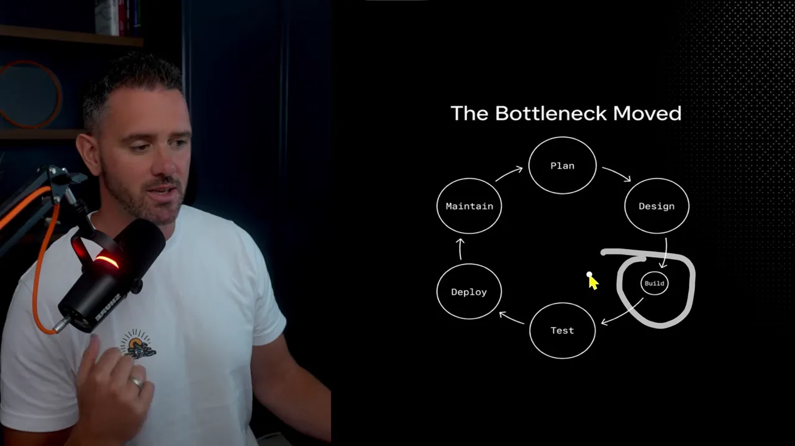
기획: 에이전트가 먼저 묻고, intent.md로 남겨요
예전 기획은 사람이 요구사항을 모으고, PRD(Product Requirements Document)를 쓰고, 워크숍을 열어 이해관계자를 만나는 일이었어요. 새 방식은 반대 방향이에요. 에이전트가 사람을 인터뷰하면서 맥락을 쌓아요. 발표자 화면의 입력창에 바로 그 명령이 적혀 있어요. 자기가 만든 /sd-discovery, Matt Pocock의 /grill-me, Cursor의 /requirements-discovery 중 아무거나 써도 된다는 뜻이에요.
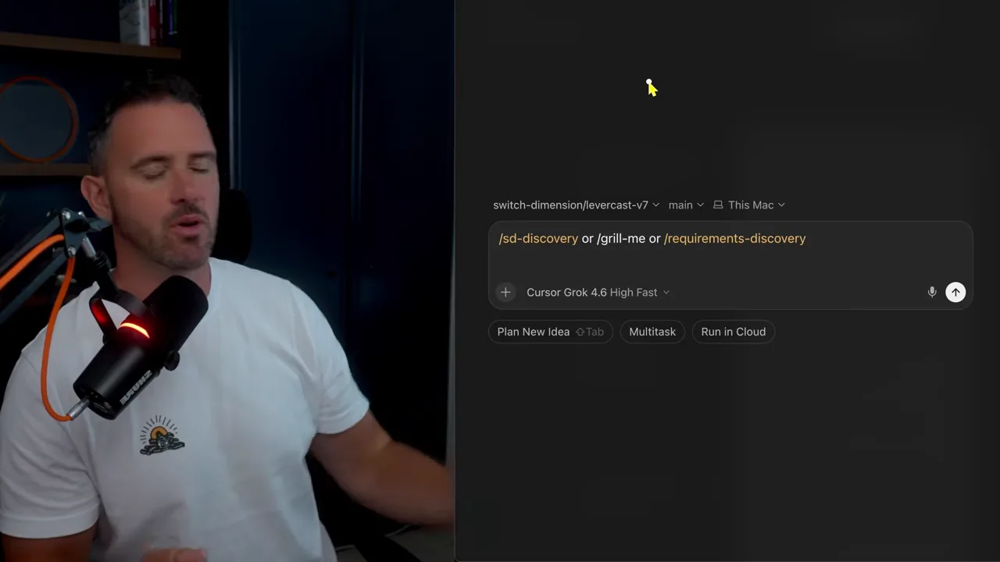
사람은 자기 경험과 도메인 지식을 이 대화에 최대한 쏟아 내요. 대화가 끝나면 에이전트가 문제점을 정리해 intent.md에 담아요. 슬라이드 문구 그대로 '사람이 읽을 수 있고, 기계가 바로 실행할 수 있는' 파일이에요.
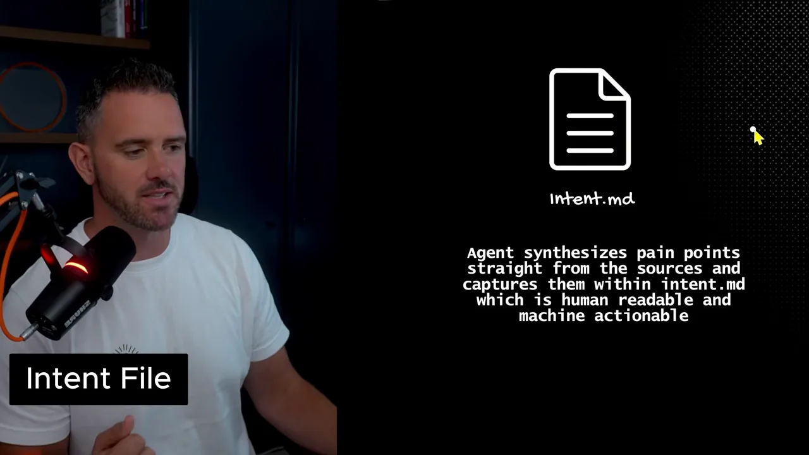
예전 방식과 무엇이 다를까요
플레이북은 두 칸으로 비교해요. 왼쪽 TRADITIONAL 칸에서는 아이디어가 백로그, 유저 스토리, 스토리 포인트, 리파인먼트 회의를 거치면서 넘겨질 때마다 주인이 바뀌어요. 그래서 엔지니어에게 닿을 즈음엔 원래 뜻에서 몇 걸음 멀어져 있어요. 오른쪽 AI-NATIVE 칸에서는 아이디어를 낸 사람이 Claude와 직접 브레인스토밍하고, 그 결과를 원안자의 언어로 쓴 '초기 사양'인 intent.md로 남겨요.
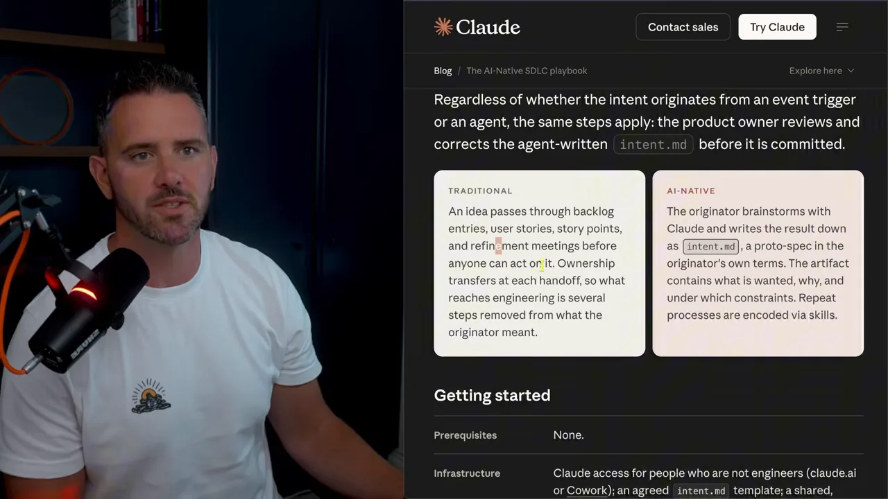
단계마다 문서가 하나씩 이어지는데, 발표자는 이걸 아티팩트 체인이라고 불러요. 기획에서 intent.md, 설계에서 spec.md, 구현에서 plan.md가 나오고, 배포 때는 PR이 남아요. 아래 그림은 영상 전체에서 나온 단계와 문서를 한 줄로 모은 거예요. 색이 칠해진 상자는 사람과 에이전트가 함께 일하는 단계예요.
준비물은 단순해요. Cursor든 Claude Code든 Codex든, 프로젝트에 intent 폴더를 하나 만들고 거기에 intent.md를 저장하면 돼요. 발표자는 다크 모드 기능을 예로 들어요. 원하는 동작을 에이전트와 이야기한 뒤, 그 결과를 intent 폴더에 저장하게 해요. 형식은 팀마다 달라도 되지만, 한번 정하면 자주 바꾸지 말라고 해요. 팀과 에이전트와 스킬이 같은 흐름 위에서 일해야 하니까요.
누가 쓰고, 누가 고칠까요
intent.md를 만드는 사람을 오리지네이터라고 불러요. 전문가일 필요가 없어요. 버그를 신고하는 고객, 기능 아이디어가 있는 PM(Product Manager), 프로세스를 고치고 싶은 개발자 모두 될 수 있어요. 플레이북 화면의 4번 줄이 강조돼 있는데, 오리지네이터가 Claude가 잘못 이해한 부분을 바로잡는 단계예요. 그다음 5번에서 공유 위치에 커밋하면 작성자와 시각이 기록에 남고, 제품 책임자가 넘겨받아요. 아래 코드 블록은 'claims status self-service' 예시 intent로, Problem과 Proposed outcome 항목이 보여요.
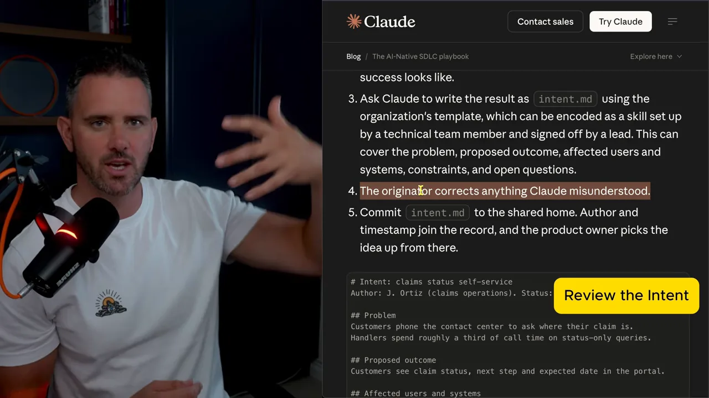
intent가 쌓이면 제품 책임자가 백로그로 검토해요. 마크다운 파일 목록이어도 되고 노션이나 Linear에 모아도 돼요. 발표자는 에이전트에게 트리아지까지 맡겨요. 화면의 Tracker 보드에서 카드마다 Frontend 같은 영역, 작업 크기, 기능 여부, 우선순위 태그가 붙어 있어요. 노란 자막은 '마크다운은 선택이지만, 정보원은 하나만 두라'는 조언이에요.
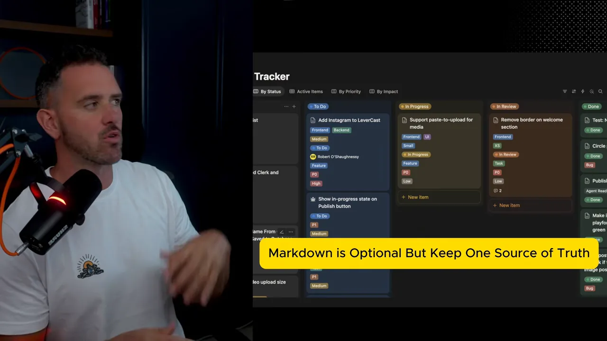
설계: intent.md가 spec.md를 만들어요
intent 다음 문서는 spec이에요. 화면의 흐름도에서 Plan 칸 옆에는 intent.md, Design 칸 옆에는 spec.md가 적혀 있고, 두 칸 위에 모두 'Human - Agent' 꼬리표가 붙어 있어요. 두 단계 모두 사람과 에이전트가 함께 일한다는 뜻이에요.
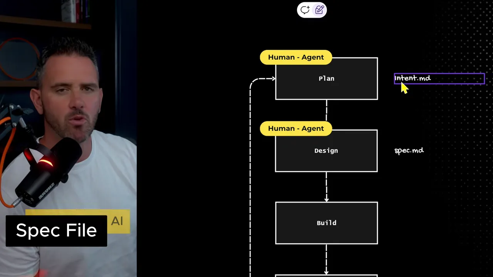
플레이북은 intent가 커밋되거나 승인되면, 훅이나 정해진 절차로 spec이 자동으로 만들어지게 하라고 해요. 전용 스킬을 주지는 않고, 예시 프롬프트 하나를 보여 줘요. 발표자가 그 프롬프트를 prompts/intent-to-spec.md 파일로 옮겨 둔 화면이에요. 내용은 세 문장이에요. 첨부한 intent.md를 읽고 요구사항·설계 사양을 만들 것, 브랜드 가이드라인·보안 정책·UX(User Experience) 기준을 지키도록 쓸 수 있는 스킬을 적용할 것, 엔지니어링 팀에 바로 넘길 수 있게 spec.md로 정리하고 정책끼리 부딪히는 곳은 분명히 적을 것.
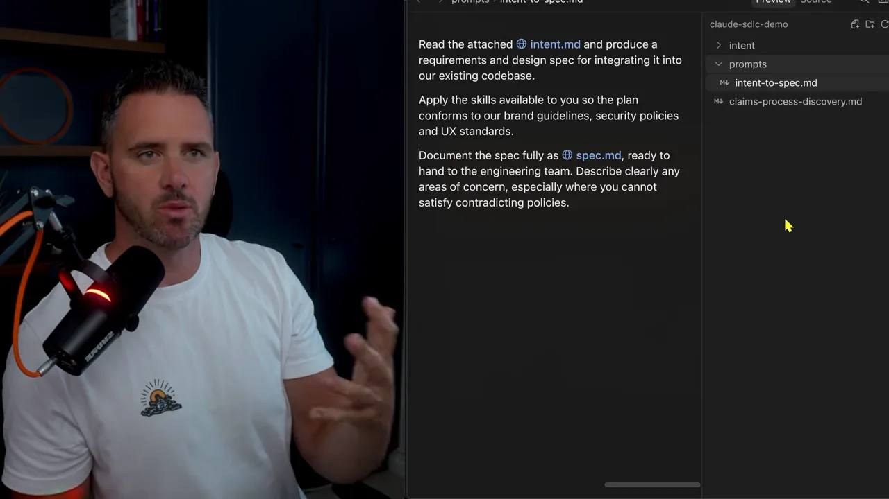
꼭 스킬을 만들 필요는 없어요. Cursor나 Claude Code나 Codex의 기본 플랜 모드를 써도 되고, 팀이 일하는 방식에 맞춘 spec을 뽑는 스킬을 따로 만들어도 돼요. 발표자는 여기에 정답이 하나뿐이지 않다고 강조해요.
다만 어떤 방법이든 조직의 정책은 들어가 있어야 해요. 스타일 가이드나 보안 정책을 agents.md에 적어 두든 스킬로 묶어 두든, spec이 만들어질 때 그 규칙이 지켜지는지가 거버넌스예요. 그리고 이 원칙은 spec만이 아니라 체인의 모든 문서에 똑같이 적용돼요.
구현: plan.md를 캐묻고 에이전트를 풀어 줘요
구현은 엔지니어가 intent와 spec을 Claude Code나 Cursor의 플랜 모드에 넣는 데서 시작해요. 흐름도에 역할이 붙었어요. Plan 옆에는 Product Manager와 Product Owner, Design 옆에는 Engineer가 적혀 있고, Build 상자에는 'Agent' 꼬리표만 붙어 있어요. spec.md 쪽으로는 skills/policy 화살표가 들어와요.
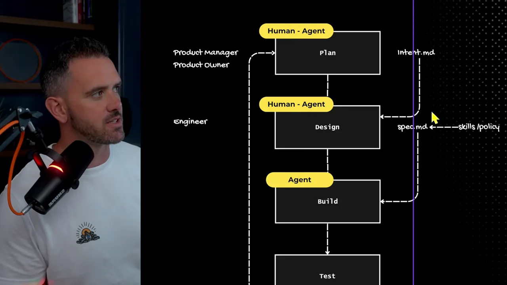
plan.md를 캐물어요
플랜 모드가 내놓는 게 plan.md예요. 플레이북 화면에서 강조된 두 줄이 이 단계의 핵심이에요. 3번은 이 변경이 무엇을 깨뜨릴 수 있는지, 어느 단계가 가장 위험한지, Claude가 고르지 않은 다른 선택지는 무엇인지 캐물으라는 내용이에요. 4번은 대화를 본 적 없는 엔지니어가 계획서만 보고 구현할 수 있을 때까지 다듬으라는 거예요.
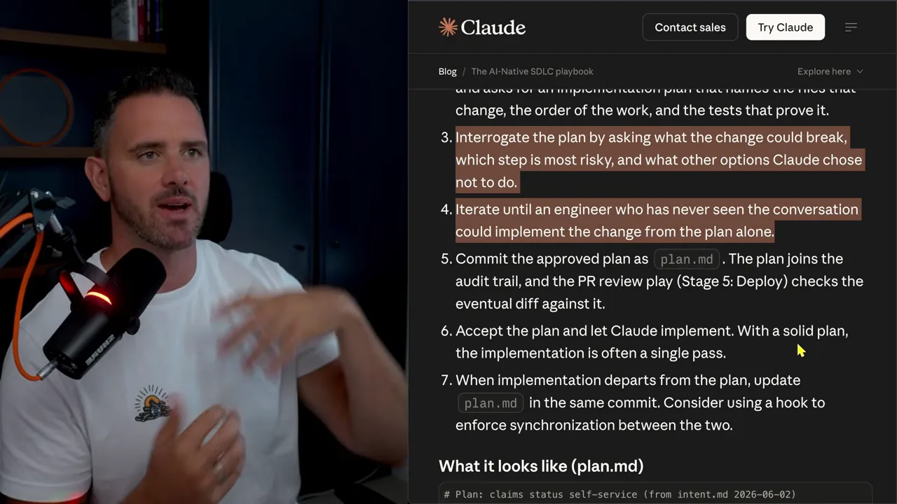
발표자가 이 기준을 중요하게 보는 이유가 있어요. SDLC의 각 단계를 에이전트 하나가 다 하지 않거든요. 독립된 에이전트와 서브에이전트가 단계를 나눠 맡고, 각자 이전 대화를 모르는 빈 맥락에서 시작해요. 발표자 자신의 워크플로 그림을 보면 Issue와 Discovery 뒤로 Agent 2~6이 Prototype, Plan, Implement, 테스트·리뷰, Pull Request, Security CI(Continuous Integration) Preview를 하나씩 맡고, 옆으로 research 서브에이전트들이 붙어 있어요.
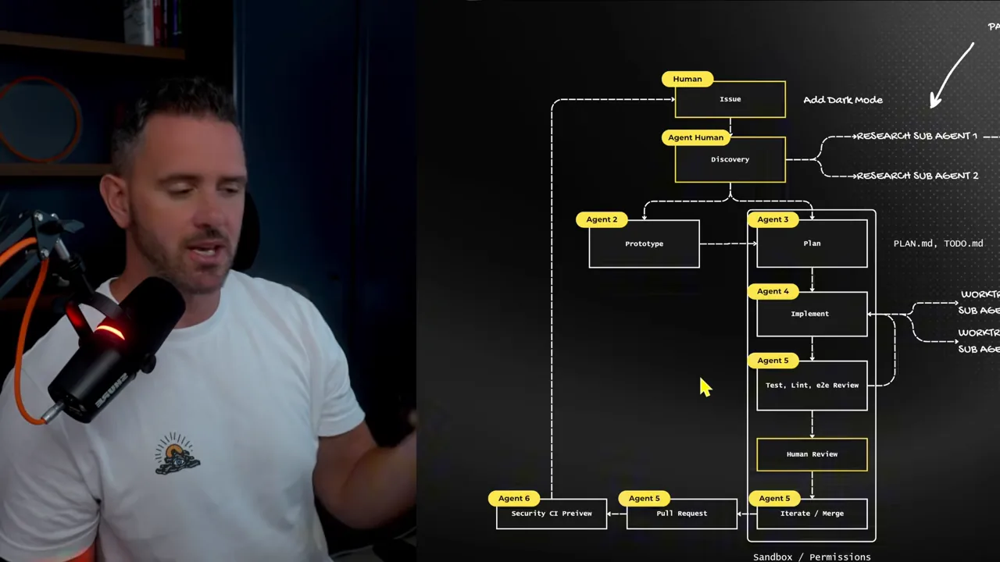
plan.md의 뼈대는 네 부분이에요. 플레이북 예시를 보면 ## Files that change에 바뀔 파일 세 개, ## Order of work에 작업 순서 세 단계, ## Risks에 'claims-core API가 초당 50건으로 제한되니 패널이 캐시해야 한다'는 위험, 그리고 ## Proof에 성공을 증명할 테스트가 들어가요. Proof는 린트와 테스트처럼 결과가 딱 정해지는 확인이면 더 좋아요. 강조된 7번 줄은 구현이 계획에서 벗어나면 같은 커밋에서 plan.md도 고치고, 둘을 맞추는 일을 훅으로 강제해 보라는 내용이에요.
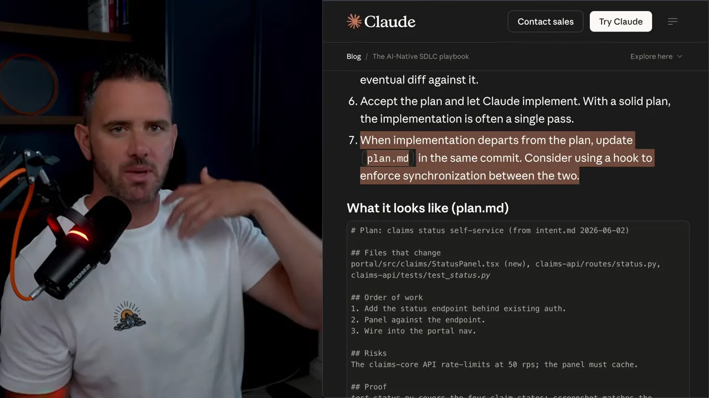
기업에서는 여기에 거버넌스가 붙어요. plan, intent, spec의 버전을 저장하고, 누가 손댔고 어떻게 바뀌었는지 남기라는 거예요. 슬라이드는 V1, V2, V3로 겹친 plan.md 아래에 '계획 수정은 누가 승인했는지와 함께 기록된다'고 적어요. 발표자는 함께 일한 회사들이 이 부분을 가장 어려워했다고 말해요. 그래도 DORA(DevOps Research and Assessment) 지표 같은 숫자로 AI가 실제로 얼마나 효과가 있는지 증명하려면 이 기록이 있어야 해요.
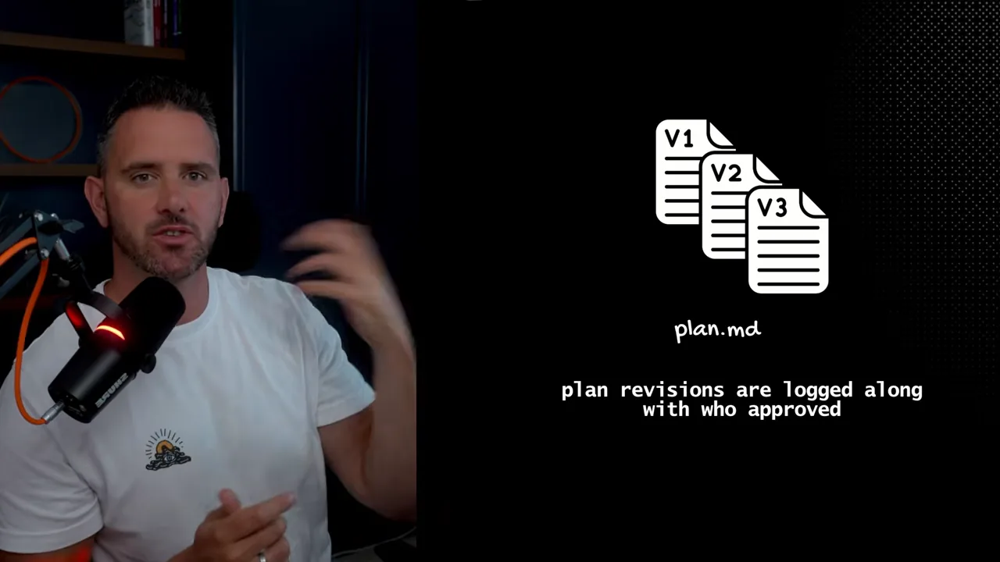
오토 모드와 권한 경계
구현을 빠르게 하려고 플레이북은 오토 모드를 권해요. 화면의 'Claude Code on auto mode' 문단은 엔지니어가 계획을 승인하면 Claude가 수정할 때마다 허락을 묻지 않고 적용한다고 설명해요. 다듬어진 CLAUDE.md, 정책을 담은 스킬, 위험한 동작을 막는 훅, Claude가 돌릴 수 있는 테스트가 갖춰질수록 자동 승인이 기본이 된다고 해요.
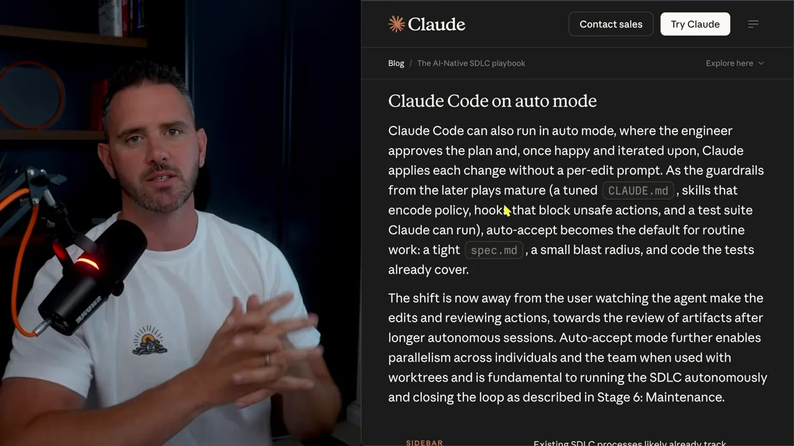
발표자의 조언은 조직마다 다르게 가라는 거예요. 잠긴 환경이라면 처음엔 권한을 꼼꼼히 정해 두고 지켜보면서 시작해요. 공정한 사용 범위, 에이전트가 쓸 도구, 볼 수 있는 웹 출처, 받아 올 패키지 정책이 정리되면 Cursor나 Claude의 권한 설정에 고정해요. 그러면 사람이 끼지 않아도 에이전트가 훨씬 빨리 움직여요. 슬라이드는 이걸 그림으로 보여 줘요. 가운데 'CODING AGENT'가 'SANDBOX' 안에 있고, 자물쇠 달린 경계 너머로 Test runner, Git, Secrets management, Permission boundaries가 있어요. 발표자는 이걸 블라스트 반경을 좁히는 일이라고 불러요.
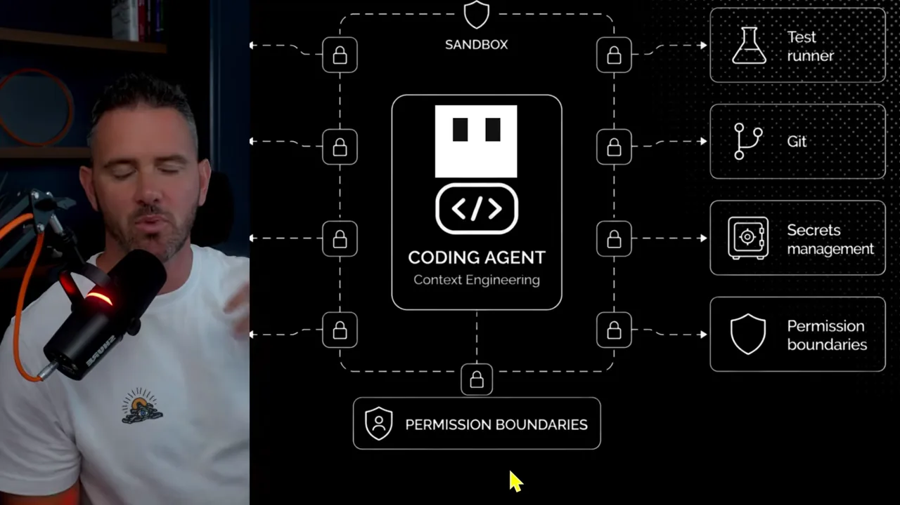
워크트리, 훅, 서브에이전트
플레이북은 워크트리도 권해요. 에이전트 여러 개가 각자 다른 작업을 동시에 하게 해 주는 장치예요. 그리고 이 과정이 사람 없이 굴러가고, 문서가 최신 상태로 유지되고, 에이전트가 선을 넘지 않게 붙잡는 건 훅이에요. Build 상자 옆 갈고리 아이콘 아래 네 줄이 예시예요. 계획 갱신(update plan), 파일 수정 차단(block file edit), 린터 실행(run linter), 자격 증명 차단(block credentials)이에요. 발표자는 승인하지 않은 npm 패키지를 쓰지 못하게 막는 것도 예로 들어요.
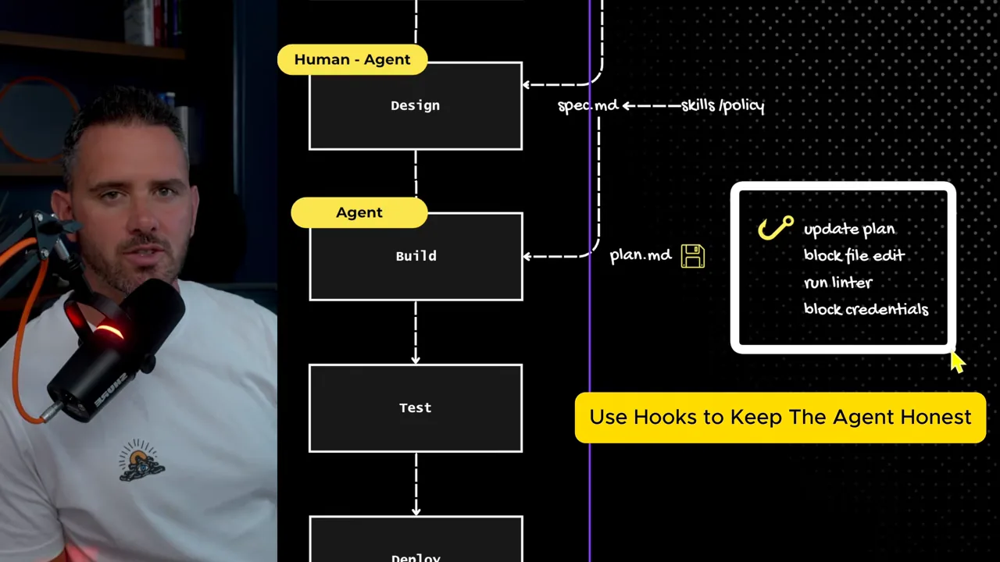
린팅도 같은 계열이에요. 코드나 문서를 정해진 규칙대로 훑어 조건을 지켰는지 확인하는 방법이고, 결과는 통과 아니면 실패 둘 중 하나예요. 계획이 서면 좋은 에이전트 하네스는 계획을 서로 독립된 작업으로 나눠 서브에이전트에게 맡기고, 병렬로 할 수 있는 건 워크트리에서 돌려요. 발표자는 이 기능이 Cursor, Claude Code, Codex에 이미 들어 있다고 말해요.
테스트: 사람보다 에이전트가 먼저 검증해요
예전 SDLC에서 테스트는 일이 자주 멈추는 곳이었어요. 작업을 개발 서버에 올리고, 테스터나 QA(Quality Assurance)가 오기까지 며칠을 기다리고, 피드백을 받고 다시 고치는 식이에요. 플레이북의 비교 칸이 이 차이를 짚어요. 왼쪽 TRADITIONAL 칸은 '코드가 돌아간다는 신호가 늦게 온다'고 써요. CI는 몇 분 뒤, 테스터는 며칠 뒤, 운영은 몇 주 뒤예요. 에이전트가 코드를 쏟아 내면 결국 사람이 그 출력을 다 확인해야 해서, 그 사람이 병목이 돼요. 오른쪽 AI-NATIVE 칸에서는 사람이 보기 전에 세션이 스스로 테스트와 빌드를 돌리고 스크린샷을 찍으며, 통과할 때까지 반복해요.
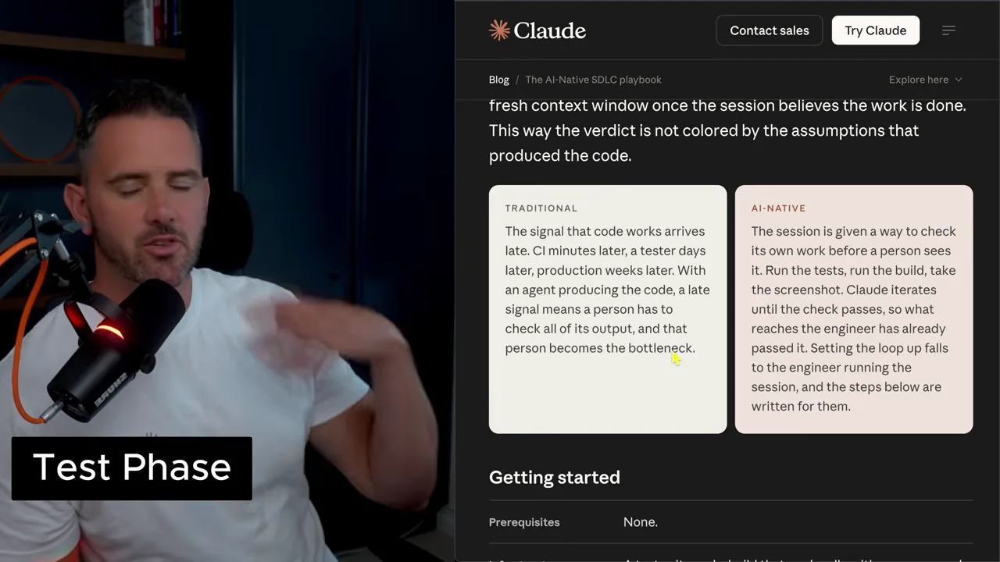
발표자는 여기서 자기 강의에서 가르치는 워크플로 그림을 보여 줘요. 플레이북과 조금 다르지만 아주 비슷하다고 미리 말해요. 가운데 세로줄을 따라 Agent 3의 Plan, Agent 4의 Build, Agent 5의 'Test, Lint, e2e Review'를 거쳐 노란 테두리의 Human Review에 닿아요. Build 옆으로는 워크트리마다 'SUB AGENT 1', 'SUB AGENT 2'가 갈라지고, 전체를 'Sandbox / Permissions' 상자가 감싸요.
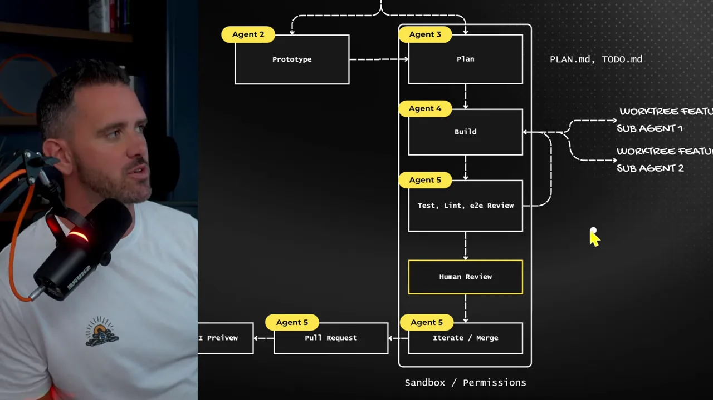
빌드가 끝나면 에이전트가 테스트를 써서 기존 기능이 깨지지 않는지 확인하고, 그 테스트가 통과하게 만들어요. 린트와 빌드도 돌려 오류가 없는지 봐요. 더 나아가면 Playwright나 테스트 주도 개발, Cursor의 브라우저 기능으로 에이전트가 화면을 직접 눌러 보고 스크린샷을 찍게 할 수 있어요. 발표자는 Cursor 클라우드 에이전트가 이걸 잘한다고 말해요. 서버를 직접 띄워 소프트웨어를 써 보고 화면 녹화까지 남겨 준다고요.
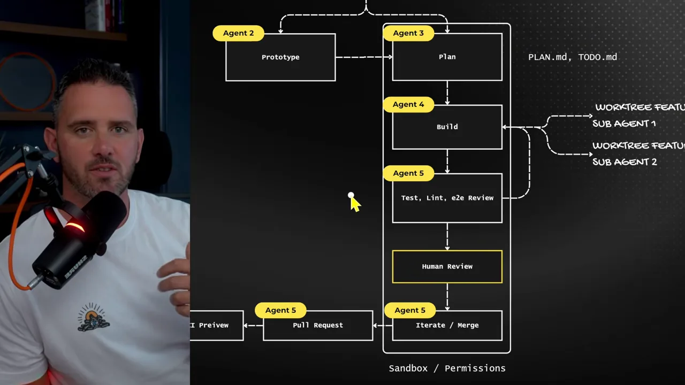
프로세스 자체도 eval로 시험해요
플레이북은 한 걸음 더 나가요. 스킬을 바꾸거나 모델을 올릴 때마다 eval을 돌리라는 거예요. 슬라이드 문구가 짧게 요약해요. '새 모델, 새 스킬? 회귀 eval로 시험하세요.' 코드뿐 아니라 에이전트를 움직이는 설정도 퇴보할 수 있으니까요.
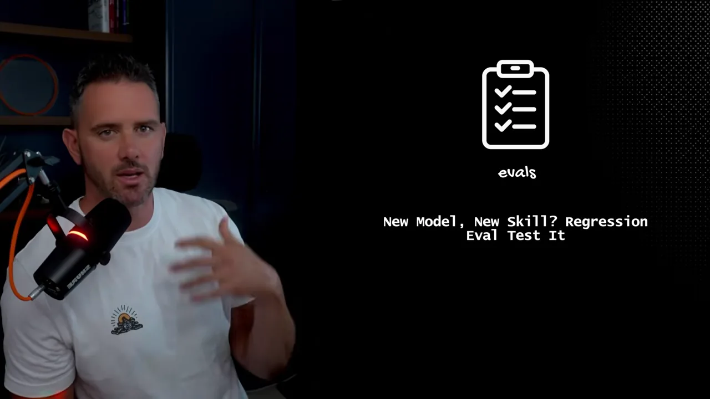
방법은 화면의 'How to execute it' 목록에 있어요. 1번은 플랫폼 엔지니어가 최근 작업에서 실제 과제를 모으고 각각 기대·승인된 결과를 붙이는 거예요. 발표자는 '20개 정도'라고 말하는데, 강조된 화면 문구는 '20~50개'예요. 2번은 과제마다 프롬프트와 '합격 기준'을 함께 적어요. 테스트 통과, 린트 깨끗함, 동작 변화 없음, 정책 준수 같은 것들이에요. 3번은 이 묶음을 CI에서 정해진 일정마다, 그리고 CLAUDE.md나 스킬이나 훅이 바뀔 때마다 돌리는 거예요. 위쪽 Infrastructure 줄을 보면 Claude Code를 비대화형으로 돌릴 수 있는 CI와, eval 실행 예산이 있는 API(Application Programming Interface) 키가 필요하다고 적혀 있어요.
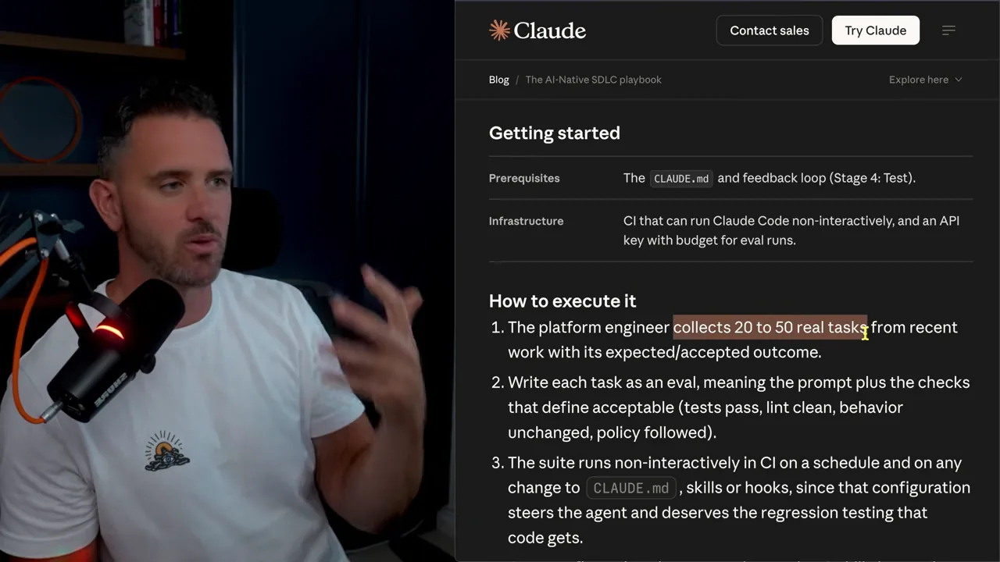
배포: PR 리뷰도 Claude가 맡아요
사람 리뷰가 끝나면 배포예요. 에이전트는 자기 브랜치나 워크트리에서 바꾼 내용을 바로 합치거나, 메인 저장소로 PR을 만들어요. PR은 '이렇게 바꿨으니 보고 괜찮으면 합쳐 달라'는 요청이에요. 화면은 발표자 저장소의 실제 PR이에요. 제목은 'docs: add Cursor Cloud dev environment setup instructions'이고, 본문의 Summary와 What's working now에 에이전트가 무엇을 확인했는지 적혀 있어요.
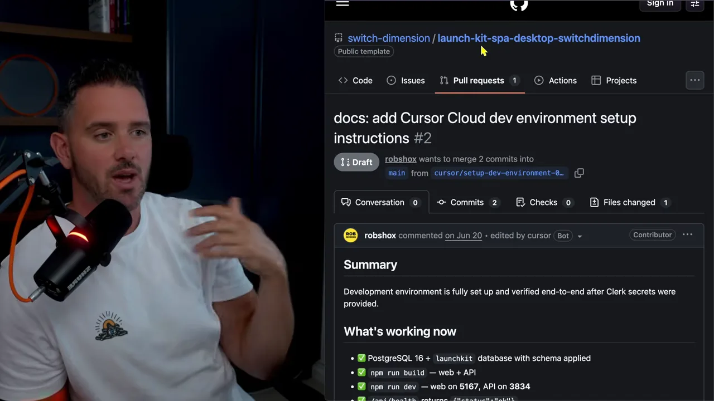
플레이북은 CI 안에서든 PR이 생길 때든 Claude가 들어와 정책과 보안 기준에 맞춰 리뷰하게 하라고 해요. 이 모든 게 비동기로 돌아요. 리뷰하는 에이전트가 'PR을 받아들일 수 없다, 이렇게 고쳐 달라'고 코멘트를 남기면, 다른 Claude Code 인스턴스가 그 코멘트를 처리해요. 각 인스턴스는 자기 agents.md, 스킬, 훅, 린트 설정에 따라 다른 정책을 가질 수 있어요.
흐름도의 Deploy 상자 옆에 이 장면이 그려져 있어요. 빨간 Claude 캐릭터 아래 'review PR'과 'Address Comments on PR'이 점선으로 오가고, 그 오른쪽에 갈고리 아이콘과 'block deploy'가 붙어 있어요. 특정 권한이 주어지거나, 특정 사람이 승인하거나, 릴리스 조건이 충족될 때까지 배포를 막는 훅이에요.
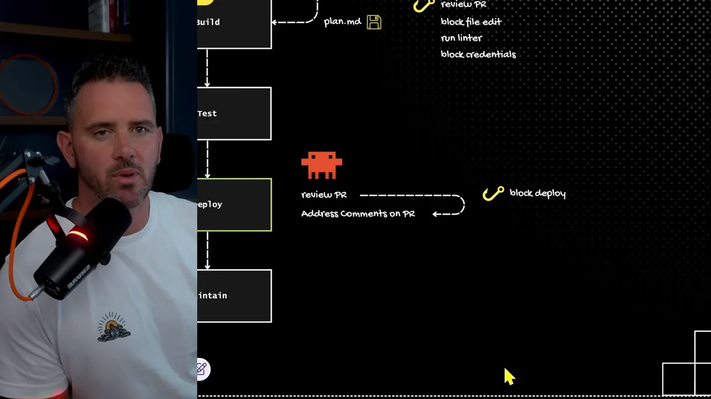
PR이 정리되면 또 다른 에이전트가 보안 검사와 CI 미리보기를 돌려요. 발표자 워크플로 그림의 맨 왼쪽 아래 'Agent 6 · Security CI Preview' 칸이에요. 린트나 게이트 검사처럼 결과가 정해진 확인을 쓸 수도 있고, Cursor Bugbot이나 Claude 보안 리뷰 같은 에이전트에게 오류를 찾게 할 수도 있어요.
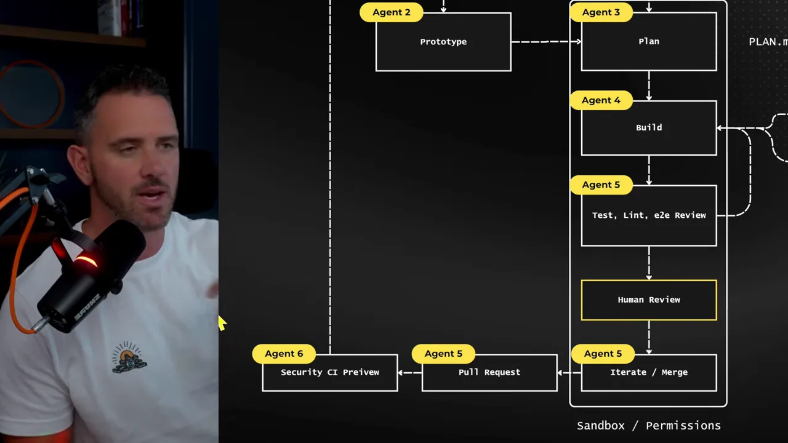
유지보수: 사람이 없어도 루프가 돌아요
마지막 단계는 유지보수예요. 발표자는 여기가 가장 '꿈같은' 부분이라고 말해요. 플레이북의 원형 그림은 Plan부터 Maintain까지 여섯 단계를 화살표로 잇고, 가운데에 Claude를 놓아요. 모든 단계에 Claude가 들어가 있다는 그림이에요.
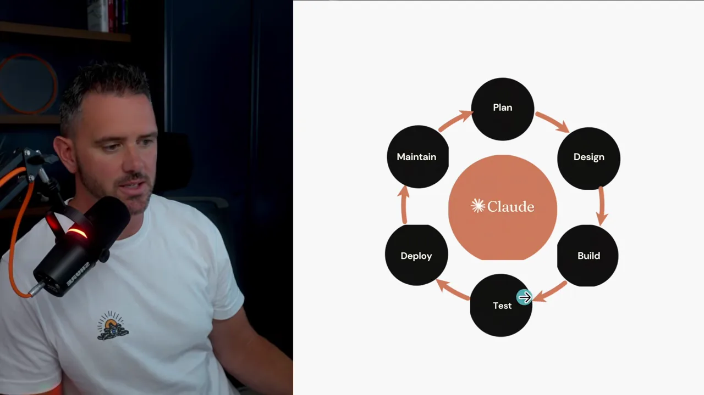
비교 칸이 차이를 보여 줘요. 왼쪽 TRADITIONAL 칸에서 유지보수는 사후 대응이에요. 모든 티켓과 장애가 사람을 기다려요. 새벽 3시 알림은 놓칠 수 있고, 티켓은 누가 집어 들 때까지 백로그에 묻혀 있어요. 사후 분석에서 나온 조치도 다음 불이 먼저 나면 코드에 닿지 못해요. 오른쪽 AI-NATIVE 칸에서는 지표 이탈, 티켓, 채널 메시지, 스케줄 같은 트리거가 사람 없이 Claude를 불러내요. Claude는 진단하고, 정해진 경로로만 움직이고, 찾은 내용을 intent.md로 써요. 그 intent가 앞에서 본 단계를 그대로 다시 지나가요.
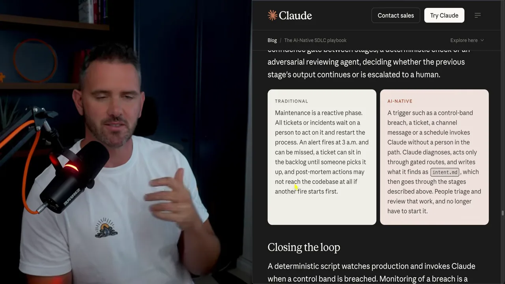
실제로는 지키고 싶은 지표를 먼저 정해요. 테스트 중 페이지가 죽거나 API 요청 제한에 걸리는 일이 갑자기 늘면, 에이전트가 진단하고 intent를 만들고 해결책까지 제안해요. 사람이 컴퓨터 앞에 앉기도 전에요. 플레이북 화면의 'How to execute it'이 단계를 적어 둬요. 3번 줄이 특히 구체적이에요. bands.yaml 설정에 대응 단계를 나눠 두고, 지표가 평소에서 얼마나 벗어났는지에 따라 Claude가 할 수 있는 일이 달라져요.
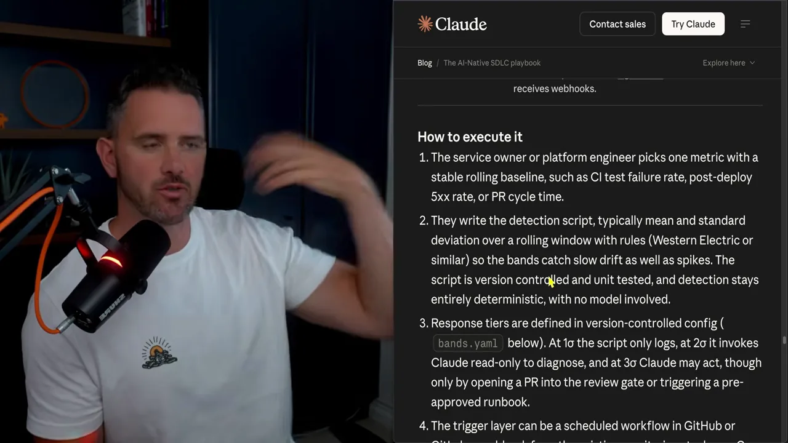
화면의 목록을 표로 옮기면 이래요.
| 순서 | 누가·무엇을 | 내용 |
|---|---|---|
| 1 | 서비스 책임자나 플랫폼 엔지니어가 지표 하나를 골라요 | 평소 범위가 안정적인 것. 예: CI 테스트 실패율, 배포 후 5xx 비율, PR 처리 시간 |
| 2 | 탐지 스크립트를 써요 | 이동 구간의 평균과 표준편차로 서서히 밀리는 것과 갑자기 튀는 것을 모두 잡아요. 버전 관리와 단위 테스트를 하고, 모델은 쓰지 않아요 |
| 3 | bands.yaml에 대응 단계를 정해요 | 1σ는 기록만 해요. 2σ면 Claude를 읽기 전용으로 불러 진단해요. 3σ면 Claude가 움직일 수 있지만, 리뷰 게이트로 가는 PR을 열거나 미리 승인된 런북을 실행하는 데까지만이에요 |
| 4 | 트리거 계층을 둬요 | GitHub의 예약 워크플로 같은 것으로 돌려요 |
사람은 어디에 남을까요
발표자가 정리한 이 문서의 요지는, 에이전트가 빌드 단계에만 있지 않고 SDLC 전체로 들어간다는 거예요. 단계마다 사람 시간을 줄이되 중요한 검토 지점에는 사람이 남아요. 몇 명을 어느 단계에 둘지는 팀과 일의 중요도에 따라 달라요. 중요도가 낮으면 에이전트만 돌려도 돼요. 플레이북의 Closing thoughts 마지막 상자가 이 생각을 한 줄로 적어 둬요.
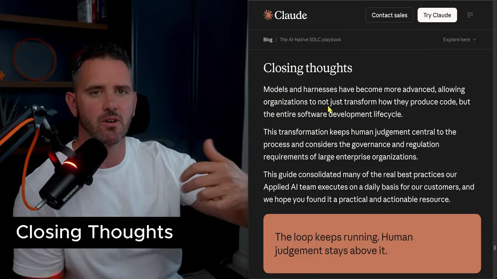
그리고 발표자는 이 문서를 정답으로 받아들이지 말라고 해요. 여러 회사의 AI SDLC를 도와 보니 모두에게 맞는 방식은 없었대요. superpowers나 BMad Method 같은 방식을 쓰거나 직접 만든 흐름이 있다면, 버리지 말고 플레이북에서 좋은 부분만 가져오면 된다고요. 단계별로 무엇이 바뀌는지 영상 내용을 한 표로 모으면 이래요.
| 단계 | 예전 방식 | 영상이 말하는 방식 | 남는 문서 |
|---|---|---|---|
| 기획 | 요구사항 수집, PRD, 워크숍 | 에이전트가 사람을 인터뷰해요 | intent.md |
| 설계 | 사람이 사양서를 써요 | intent 승인 시 spec을 자동으로 만들어요 | spec.md |
| 구현 | 가장 길고 비싼 단계 | 계획을 캐묻고, 오토 모드·워크트리·훅·서브에이전트로 돌려요 | plan.md |
| 테스트 | QA를 며칠 기다려요 | 사람보다 먼저 에이전트가 테스트·린트·화면 확인을 해요 | 테스트, eval |
| 배포 | 사람이 PR을 읽어요 | Claude가 리뷰하고, 다른 인스턴스가 코멘트를 처리하고, 훅이 배포를 막아요 | PR |
| 유지보수 | 알림과 티켓이 사람을 기다려요 | 트리거가 Claude를 불러 진단하고 새 intent를 써요 | 새 intent.md |